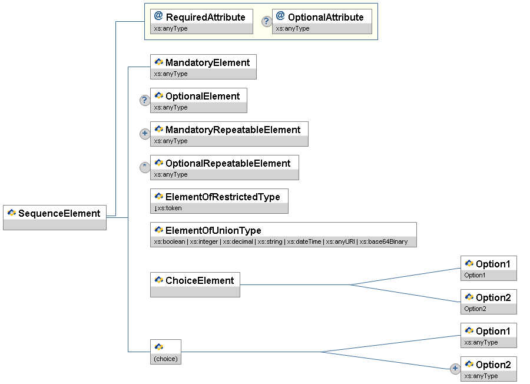

With respect to the SIF Specification, educators and non-technical readers are typically interested in the pK-12 data objects that can be shared and reported on by SIF-enabled applications in SIF implementations. This document, the SIF Data Model Implementation Specification, contains a Data Model section in a format that should not be a barrier to readers with a some knowledge of [XML]. More technical readers, including software architects, developers and integrators, will also be interested in the separate SIF Infrastructure Implementation Specification document.
The first time a term or concept is defined, it may be emphasized.
SIF message and object names, XML element tags, attribute names and values, and other codes or values are typically presented as in this sentence.
References to other works occurring in this text are given in brackets, e.g. [REFERENCE]. The text in brackets corresponds to a key in the References appendix. Often when the text in the brackets duplicates surrounding text, the reference alone is used (e.g. [XML] instead of XML [XML]).
The key words MUST, MUST NOT, REQUIRED, SHALL, SHALL NOT, SHOULD, SHOULD NOT, RECOMMENDED, MAY, OPTIONAL, when EMPHASIZED, are to be interpreted as described in [RFC 2119].
Quick overviews of XML structures, including messages, objects, common elements and types, are provided in XML diagrams. The following diagram illustrates the conventions typically encountered in SIF.

Figure 2.2.6-1: XML Diagram Conventions
XML elements are represented by rectangles with the name of the element in the upper portion and the type, if any, in the lower portion. Attributes
are represented in the same fashion, but have an @ icon rather than a SIF icon. Elements and attributes that are optional have a circled ?
(0 or 1 occurrence) to the left of the rectangle. Optional and mandatory repeatable elements are indicated by a circled * (0 or more occurrences)
and + (1 or more occurrences), respectively.
Element attributes are grouped together in a rectangular block and connected to the element with a line that turns at right angles.
Ordered sequences of XML elements are bracketed by lines that turn at right angles. When a choice of XML elements is indicated, the elements are bracketed by angled
lines. A choice of elements can occur within an element, or may be an unnamed choice of elements.
XML types are represented using the same conventions as for XML elements, though the type portion of the rectangle typically indicates a base type, if any.
The type name of any element, attribute or type may be prefixed with a ↓, indicating the type is restricted in some fashion by one or more
XML Schema facets (e.g. enumeration). When the type is a union of types, a list of types is presented, each type separated by |; if the list of union types
is long, the list may be marked with ellipses, e.g., | ...
In an actual XML diagram, element, type and attribute rectangles are usually linked to their corresponding definitions/descriptions in accompanying tables.
The SIF Implementation Specification uses the following version numbering scheme:
major version
.
minor version
r
revision number
Major versions typically introduce additions/changes to the SIF infrastructure and/or data model changes that impact a significant
percentage of SIF-enabled applications (e.g. making previously optional elements mandatory, removal of deprecated objects, elements or values).
The first release of a major version has a minor version of 0 (2.0);
major version numbers start at 1 and are incremented as major versions are released (1.0, 2.0, 3.0, ...).
Minor releases typically introduce new data objects, or optional additions to data objects, to the marketplace, and may include minor
infrastructure additions/changes that do not impact existing SIF-enabled applications and that ZIS vendors have agreed to implement.
The first minor version released subsequent
to and within a major release has a minor version of 1 and is incremented as new minor versions are released
(2.1, 2.2, ...). If a significant number of minor release features is introduced in a specification,
the SIF Association may decide to increment the minor version number by more than 1 (e.g. 1.1 to 1.5),
though a number like 1.5 is not an indication of being halfway to a major release, as minor version numbers may be incremented
significantly past 10 (2.10, 2.11, ...) as data objects and other minor version features are released.
Corrections resulting from identified errata, as well as textual changes, may be incorporated into a revision release.
These typically include minor corrections to messages or data objects, corrections of typographical errors, or corrected/expanded documentation.
If major errors in any release are identified, a revision release may incorporate changes more typical of a major or minor release.
First major and minor releases have a revision number of 0, which is omitted from the version number (2.0, not 2.0r0);
subsequent revision numbers start at 1 and are incremented as new revisions are released (2.0r1, 2.0r2,
...).
This release of the SIF Data Model Implementation Specification is a so-called migration release because it incorporates important version 3 structural changes that move the data model toward compatibility with both the 2.* and SIF 3 infrastructures. The data model Zone Services have been deprecated in lieu of similar functionality in the SIF 3 infrastructure. Also, RefIds have been added to all SIF objects that did not have them before as detailed below.
Although this specification is not a SIF Infrastructure release it does suggest that certain infrastructure features not be used, namely: Zone Services, the SOAP Transport, and Bundled Events.
RefIds added to these SIF objects:
Staff Evaluation - Events Reported changed to True.
BusPositionInfo/BusPositionInfoRefId changed to RefId.
LearningResourcePackage - example corrected.
Added four new Identity Management objects and the Identity Management Project Team section in the Spec.